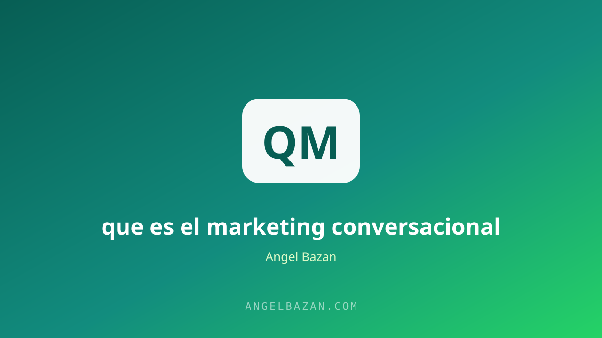

Marketing conversacional: qué es y por qué es el futuro
El anuncio grita; la conversación escucha. El marketing conversacional vende resolviendo dudas en tiempo real, y WhatsApp + IA lo hacen posible a escala. Esta es la guía completa.
En este artículo
El marketing tradicional interrumpe: muestra un anuncio, lanza una promesa y espera el clic. El marketing conversacional hace lo contrario: invita a hablar. En lugar de gritar al feed, escucha en un chat. Y la evidencia de los últimos años es contundente: la gente compra más cuando puede preguntar, comparar y resolver sus dudas con una persona (o un bot bien entrenado) antes de pagar.
No es una moda. Es la consecuencia lógica de dos cambios: la gente ya no confía en anuncios unidireccionales y las plataformas de mensajería se convirtieron en el centro de su vida digital. El marketing conversacional es el arte de vender conversando, y este artículo te muestra el sistema, el canal y la tecnología para implementarlo hoy.

Qué es el marketing conversacional
Es la estrategia que usa el diálogo en tiempo real como canal principal de venta: chats, mensajes y respuestas automáticas que acompañan al cliente desde la primera duda hasta la compra. No reemplaza tu página web: la complementa. Si tu landing es el anuncio formal, el chat es la reunión donde se cierra el trato. El embudo deja de ser un camino unidireccional y se convierte en una conversación con ramas, donde cada respuesta del cliente decide el siguiente mensaje.
Piensa en la última vez que compraste algo importante: casi seguro hiciste preguntas antes de pagar. El marketing conversacional institucionaliza ese momento: en lugar de esperar a que el cliente pregunte en un formulario, lo invitas a preguntar en el canal donde ya habla con amigos y familia todos los días. El resultado es una experiencia de compra más natural y, sobre todo, una conversión más alta: el que ya conversó ya venció la mayor barrera de la desconfianza.
Por qué ahora (y por qué es el futuro)
- La atención es escasa: nadie lee páginas largas completas; en cambio, sí responde un mensaje personal.
- La confianza se construye dialogando: el 70% de las compras empiezan con una duda; responderla en el momento es vender.
- La IA lo hace rentable: un bot bien configurado responde 24/7 por centavos; la conversación ya no exige contratar un equipo.
- Los algoritmos premian el mensaje directo: de la notificación al chat hay un solo toque, sin feeds ni publicidad en el medio.
WhatsApp: el canal conversacional perfecto
WhatsApp reúne todo lo que el marketing conversacional necesita: está en el bolsillo de todos, tiene notificaciones con tasa de apertura altísima y el tono de la conversación es personal por defecto. Por eso el sistema de venta por WhatsApp funciona tan bien: el prospecto ya está en confianza antes de que empieces a vender. El mapa completo de ese sistema está en cómo crear un funnel de WhatsApp desde cero y en cómo ganar dinero por WhatsApp.
Los 5 pilares de un sistema conversacional
- Mensaje de bienvenida: la primera respuesta define el tono. Saluda, promete valor y haz una pregunta.
- Calificación guiada: pregunta el problema, la urgencia y el presupuesto antes de ofrecer. Convierte curiosos en prospectos.
- Objeción resuelta: ten respuestas preparadas para el precio, el tiempo y la desconfianza. El guion listo en el guion para bot de WhatsApp.
- Oferta clara: presenta la solución como el siguiente paso lógico de la conversación, no como un anuncio interrumpido.
- Seguimiento: el 80% de las ventas se cierran en el seguimiento. La secuencia en el generador de secuencias.
Automatiza sin perder humanidad
La pregunta que todo el mundo hace: ¿y si automatizo, me vuelvo frío? La respuesta está en el diseño. El bot responde lo que es repetible (preguntas frecuentes, horarios, precios) y deriva al humano en el momento exacto en que la conversación sube de temperatura: una pregunta compleja, una objeción emocional, un prospecto listo para comprar. La regla es que el cliente nunca debe notar el cambio de mano; la transición se explica en automatizar WhatsApp con IA.
El punto más delicado de la automatización es el tono. Un bot que suena a robot destruye la confianza en un mensaje; uno que usa el nombre del cliente, responde con naturalidad y reconoce cuándo no sabe la respuesta gana segundos de paciencia y respeto. Las reglas para escribir ese tono conversacional están en el guion para bot de WhatsApp y en el arte de pedirle a la IA mensajes que suenen humanos, que puedes profundizar en cómo usar ChatGPT para marketing.
Cómo medir conversaciones
Un sistema conversacional se mide en tres números: tasa de respuesta (cuántos contestan al primer mensaje), tasa de calificación (cuántos llegan a la etapa de oferta) y tasa de cierre (cuántos compran). Si la primera cae, revisa tu primer mensaje; si la segunda cae, tus preguntas no filtran; si la tercera cae, tu oferta o tu objeción no cierra. Cada número señala una palanca distinta. Y si quieres más conversaciones por semana, el tráfico que las dispara se trabaja como se explica en retargeting en Meta Ads para WhatsApp.
Además de los tres números centrales, registra el valor de la conversación: cuánto demora un lead en pasar de "hola" a la compra, qué preguntas se repiten (para responderlas antes, en los propios anuncios) y a qué hora llegan las conversaciones más calientes. Esos datos convierten tu sistema conversacional en una ventaja acumulativa: cada semana sabes más de tu cliente que la anterior, y ese conocimiento se traduce directo en más ventas.
Preguntas frecuentes
¿El marketing conversacional reemplaza a la página de ventas? No: la página convence a gran escala y el chat termina de convencer uno a uno. Un embudo completo usa ambas; la pieza de entrada se diseña en qué es una landing page.
¿Necesito un bot o un humano? Empieza humano para aprender las preguntas reales de tus clientes; luego automatiza las respuestas repetibles. El bot sin datos es adivinar.
¿Cuánto cuesta implementarlo? Desde cero si respondes tú con plantillas preparadas, hasta decenas de dólares al mes con herramientas de automatización. El costo escala con tu volumen de conversaciones.

Angel Bazán
Especialista en funnels, Meta Ads y WhatsApp + IA. Ayudo a negocios a vender más combinando tráfico pagado con conversaciones automatizadas.
Conoce más sobre mí →Aprende a crear y vender productos digitales con Meta Ads, WhatsApp e IA
Clases en vivo, estrategias y recursos para construir tu sistema desde cero. 🚀
Únete gratis al grupo